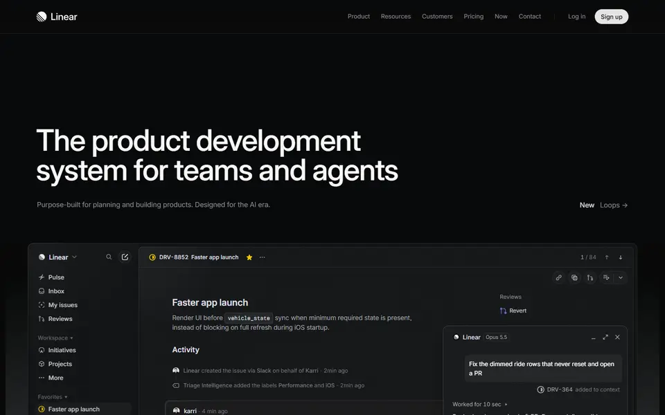

Kitap
Yeni perspektifler kazanmak ve zihnimi beslemek için düzenli okumayı yaşam biçimi kılıyorum.

Geleceğin dijital dünyasını sinematik ve yenilikçi deneyimlerle tasarlayan yazılım tutkunu.

Modern web teknolojileri ve kullanıcı deneyimi odaklı yazılım geliştirme alanında çalışmalarımı sürdürüyorum.
Karmaşık sistemleri sade, yüksek performanslı ve estetik arayüzlere dönüştürmekten büyük bir heyecan duyuyorum.
Sürekli öğrenerek yenilikçi dijital ürünler tasarlamayı ve geleceğin teknolojilerine değer katmayı amaçlıyorum.
Yeni perspektifler kazanmak ve zihnimi beslemek için düzenli okumayı yaşam biçimi kılıyorum.

Zinde bir beden ve odaklanmış bir zihin için sporu günlük rutinimin ayrılmaz parçası yapıyorum.

Farklı kültürlerin tatlarını keşfetmek ve mutfakta yaratıcı tarifler denemekten keyif alıyorum.